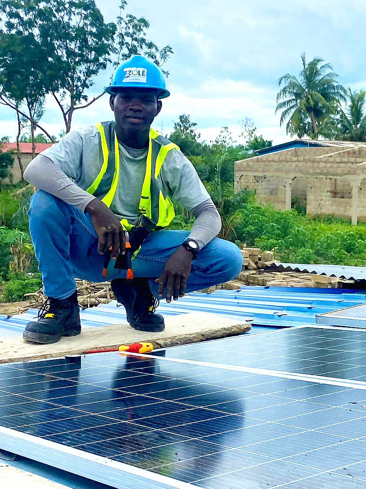

Ouvrages en béton
Conception et réalisation d’ouvrages techniques adaptés aux exigences structurelles de votre projet.
Nous intervenons sur des opérations de travaux publics avec une approche orientée sécurité, durabilité des ouvrages et respect des contraintes terrain.
Conception et réalisation d’ouvrages techniques adaptés aux exigences structurelles de votre projet.
Organisation des espaces, adaptation des accès et interventions ciblées selon le contexte du site.
Contrôle de l’avancement, coordination des intervenants et vérification de conformité en continu.
Ouvrages en béton, aménagements techniques et opérations de travaux publics.
Par un suivi régulier, une coordination active et des points d’avancement documentés.
Oui, le phasage est adapté aux contraintes terrain, accès et sécurité.

Coordination opérationnelle
Pilotage des équipes et gestion des ressources terrain.

Conformité technique
Suivi de l’exécution et contrôle des exigences techniques.

Suivi quotidien
Organisation des interventions et reporting d’avancement.
Nous évaluons avec vous les priorités techniques pour construire un plan d’action réaliste et sécurisé.
Demander une étude terrain